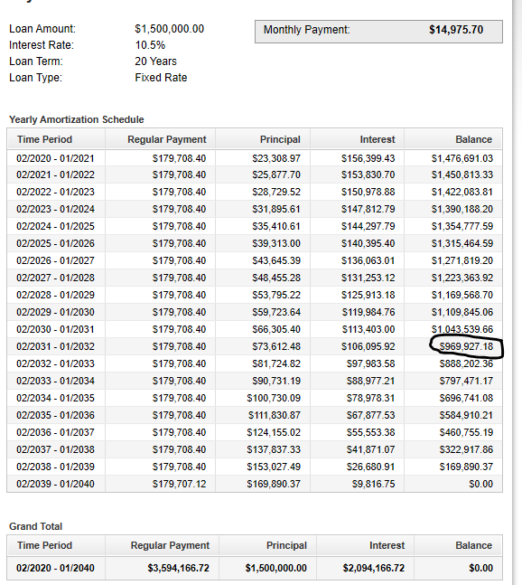
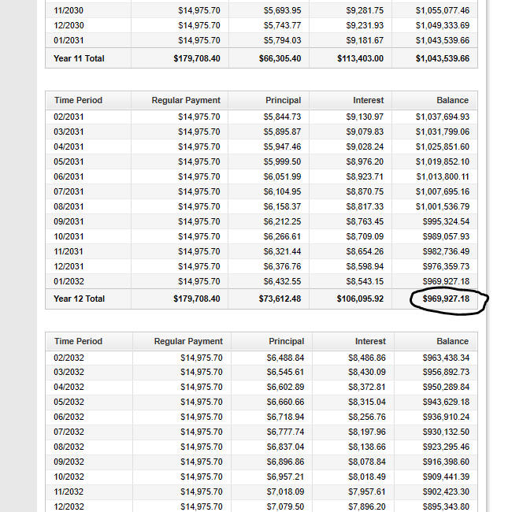

If there is one prayer that you should pray/sing every day and every hour, it is the
LORD's prayer (Our FATHER in Heaven prayer)
- Samuel Dominic Chukwuemeka
It is the most powerful prayer.
A pure heart, a clean mind, and a clear conscience is necessary for it.
For in GOD we live, and move, and have our being.
- Acts 17:28
The Joy of a Teacher is the Success of his Students.
- Samuel Dominic Chukwuemeka
Formulas Used:
Mathematics of Finance
Verify:
(1.) Most answers with the Mathematics of Finance Calculators: Financial Mathematics Calculators
(2.) Loan Amortization Table with the Loan Amortization Calculator:
Loan Amortization Calculator
NOTE: Unless instructed otherwise;
For all financial calculations, do not round until the final answer.
Do not round intermediate calculations. If it is too long, write it to at least 5 decimal places.
Round your final answer to 2 decimal places.
Make sure you include your unit.
Solve all questions.
Show all work.
Use at least two methods to solve each question whenever applicable
For ACT Students
The ACT is a timed exam...60 questions for 60 minutes
This implies that you have to solve each question in one minute.
Some questions will typically take less than a minute a solve.
Some questions will typically take more than a minute to solve.
The goal is to maximize your time. You use the time saved on those questions you
solved in less than a minute, to solve the questions that will take more than a minute.
So, you should try to solve each question correctly and timely.
So, it is not just solving a question correctly, but solving it correctly on time.
Please ensure you attempt all ACT questions.
There is no negative penalty for any wrong answer.
For JAMB and CMAT Students
Calculators are not allowed. So, the questions are solved in a way that does not require a calculator.
For NSC Students
For the Questions:
Any space included in a number indicates a comma used to separate digits...separating multiples of three digits from behind.
Any comma included in a number indicates a decimal point.
For the Solutions:
Decimals are used appropriately rather than commas
Commas are used to separate digits appropriately.
| Year | Deborah's Annual Interest ($) | Deborah's Balance ($) | Rahab's Annual Interest ($) | Rahab's Balance ($) |
|---|---|---|---|---|
| 1 |
| Year | Deborah's Annual Interest ($) | Deborah's Balance ($) | Rahab's Annual Interest ($) | Rahab's Balance ($) |
|---|---|---|---|---|
| 1 | $ 2000(0.043)(1) \\[3ex] 86.00 $ | $ 2000 + 86 \\[3ex] 2086.00 $ | $ 2000(0.043)(1) \\[3ex] 86.00 $ | $ 2000 + 86 \\[3ex] 2086.00 $ |
| 2 | $ 2000(0.043)(1) \\[3ex] 86.00 $ | $ 2086 + 86 \\[3ex] 2172.00 $ | $ 2086(0.043)(1) \\[3ex] 89.698 \\[3ex] 89.70 $ | $ 2086 + 89.698 \\[3ex] 2175.698 \\[3ex] 2175.70 $ |
| 3 | $ 2000(0.043)(1) \\[3ex] 86.00 $ | $ 2172 + 86 \\[3ex] 2258.00 $ | $ 2175.698(0.043)(1) \\[3ex] 93.555014 \\[3ex] 93.56 $ | $ 2175.698 + 93.555014 \\[3ex] 2269.253014 \\[3ex] 2269.25 $ |
| 4 | $ 2000(0.043)(1) \\[3ex] 86.00 $ | $ 2258 + 86 \\[3ex] 2344.00 $ | $ 2269.253014(0.043)(1) \\[3ex] 97.5778796 \\[3ex] 97.58 $ | $ 2269.253014 + 97.5778796 \\[3ex] 2366.830894 \\[3ex] 2366.83 $ |
| 5 | $ 2000(0.043)(1) \\[3ex] 86.00 $ | $ 2344 + 86 \\[3ex] 2430.00 $ | $ 2366.830894(0.043)(1) \\[3ex] 101.7737284 \\[3ex] 101.77 $ | $ 2366.830894 + 101.7737284 \\[3ex] 2468.604622 \\[3ex] 2468.60 $ |
| Month | Amount owing at the start of the month | Interest charged for that month | Repayment | Amount owing at the end of the month |
| 1 | 680 000.00 | 1700.00 | 2866.91 | 678 833.09 |
| 2 | 678 833.09 |
| Month | Amount owing at the start of the month($) | Interest charged for that month($) | Repayment($) | Amount owing at the end of the month($) |
| 1 | 680 000.00 | $ 0.0025(680000) \\[3ex] = 1700.00 $ | 2866.91 | $ 680000 + 1700 = 681700 \\[3ex] 681700 - 2866.91 = 678833.09 $ |
| 2 | 678 833.09 | $ 0.0025(678833.09) \\[3ex] = 1697.082725 \\[3ex] = 1697.08 $ | 2866.91 | $ 678833.09 + 1697.082725 = 680530.1727 \\[3ex] 680530.1727 - 2866.91 = 677663.2627 \\[3ex] $ |


| Population in % | Credit score range | Rating |
|---|---|---|
| 13 | 800 – 850 | Excellent |
| 27 | 750 – 799 | Above Average |
| 18 | 700 – 749 | Average |
| 15 | 650 – 699 | Below Average |
| 12 | 600 – 649 | Poor |